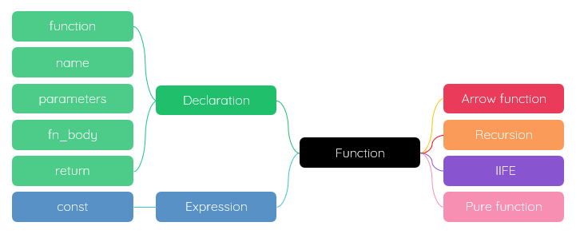

xmind
- 概述 Overview
- 封装需要重复执行的代码，有助于模块化开发 - 黑盒子
- 可以在任何地方、任何时候调用执行
- 一等公民 First-class citizens - 可以存储在变量中；可以作为参数；可以作为返回值
- 函数也是对象
- 更多信息，请访问 MDN -
Functions、MDN -
Functions Guide
Functions are blocks of code designed to perform a specific task and can be executed when
called.
函数定义 Defining functions
- 函数声明 function declaration
- Use the function keyword, followed by a name, parameters and a body
- 一个标准的函数声明，由关键字 function 、函数名、形式参数和函数体组成
- 也叫命名函数、具名函数
- 可以放在任何地方 - 预处理 - 提升
function 函数名 (形式参数列表) {
//函数逻辑实现
return 返回值;
}
1. 函数名
- 能体现函数功能的语义化标识符
- 通常使用动词+名词形式
2. 形式参数列表
- 函数复用时的定制/个性化特点；通过不同的参数实现类似的业务；此时的参数是形式参数 - 形参[占位符]
- 函数的形参也可以是函数
- 个数：根据函数功能，可以使用参数也可以不使用参数；也可以使用任意多的参数：以逗号,分隔
- 使用：函数逻辑实现过程中，通常直接使用形参，也可以使用 arguments 数组接受不定个数的形参，见后续内容
- 传值：所有参数传递的都是值，不可能通过引用传递参数；有不少开发人员在这一点上可能会感到困惑，因为访问变量有按值和按引用两种方式，而参数只能按值传递；可以指定参数默认值
3. 函数体|函数逻辑
- 函数功能的具体实现
- 通常需要借助局部变量完成
- 建议使用 let 声明变量，将其作用域限制在当前函数快内
- 使用 var 声明的变量也是局部变量，只能在函数内部访问它
- 可以在不同的函数中使用名称相同的局部变量
- 局部变量比同名全局变量的优先级高，所以局部变量会隐藏同名的全局变量
- 函数运行完毕，局部变量会被删除
4. 返回值
- 函数的执行结果
- 可以有返回值；也可以没有返回值
- 没有显示的指定返回值，函数的返回都是 undefined
- 可以使用 return 退出函数或返回结果
- 位于 return 语句之后的任何代码不会执行
- 如果没有返回值，也可以省略 return：所有逻辑执行完毕后，自动退出函数
- 逻辑处理过程中，可以随时使用 return退出函数，如数组遍历中，已经拿到了需要的数据，不需要继续执行后面的代码
- 推荐：让函数始终都返回一个值，便于调试
- 返回值可以是函数；返回的函数仍然需要执行才能拿到最后的结果
- 函数表达式 Function Expression
- 函数没有名称，而且位于一条赋值语句右边，被赋给一个常量，又叫 匿名函数
- 因为是赋值语句，所以最好末尾加上;
- 通常作为回调函数 callback/cb 在异步编程中使用
- 必须先声明后使用，否则告警：Cannot access 'xxx' before initialization
const sum = function (形参列表) {
//函数逻辑实现
return 返回值;
};
没有重载；后定义的同名函数会覆盖先定义的函数
每个函数都是 Function 类型的实例，而且都与其他引用类型一样具有属性和方法
由于函数是对象，因此函数名实际上也是一个指向函数对象的指针，不会与某个函数绑定
将函数名想象为指针，也有助于理解为什么 ECMAScript 中没有函数重载的概念
解析器会率先读取函数声明/预处理 - 提升 hoisting，并使其在执行任何代码之前可用/可访问
函数表达式，则必须等到解析器执行到它所在的代码行，才会真正被解释执行
函数调用 Function calling
- 函数要调用才能执行：函数名加上一对圆括号()
- 调用函数时，根据函数声明，传递个数对应的参数[实际参数-实参]；多余的参数会被忽略
- 函数体可以调用其它函数
- 函数可以调用自己 - 递归函数
- 函数调用可以在函数声明前调用；也可以在函数声明后调用；实际上，浏览器会预先提升 hoisting 处理变量声明和函数声明
[] 示例
- 不指定返回；执行完逻辑，自动结束
function dis() {
console.log('hi');
}
console.log(dis());//undefined
- 默认参数
function dis(age = 18) {
return age
}
- 显式指定返回
function dis(num1, num2) {
return num1 + num2;//有返回值
}
console.log(dis(1, 2));//3
其它函数 Other
- 纯函数 Pure function
- 确定性
.相同的输入始终得到相同的输出
.大多数的操作都是以数组为对象，所以后续各例都以数组为例
.如果一个函数的执行会修改到数组，则这个函数不是纯函数
.如果一个函数没有参数，那它就不是纯函数
- 无副作用
.不会修改外部环境，如全局变量
[] slice(start, end)：返回一个拷贝，从start开始到end结束，不包括end；是纯函数
[] splice(start, count)、 revers()、sort() ：不是纯函数
- 函数的函数
- 函数名本身就是变量，所以函数也可以作为值来使用。也就是说，不仅可以像传递参数一样把一个函数传递给另一个函数，而且可以将一个函数作为另一个函数的结果返回
- 返回的函数必须执行才能拿到最后的结果
[] 声明一个函数，使其执行另外一个函数
function cb(fn, para) {
return fn(para);
}
function add(num) {
return num + 10;
}
let res = cb(add, 10);
console.log(res);
内部属性和方法
- arguments
- 它是一个类数组对象，包含着传入函数中的所有参数
- length
- 函数希望接收的命名参数的个数
- 使用 arguments 后，甚至不需要声明形参
- 显示指定参数
function sum(num0, num1) {
return num0 + num1;
}
- 不指定参数
function sum() {
let res = 0;
for (let i = 0; i < arguments.length; i++) {
res += arguments[i];
}
return res;
}
sum(1, 2);
sum(1, 2, 3);
[] 查看形参和实参
function fn(a, b) {
console.log(fn.length);//2 - 形参个数为2
console.log(arguments.length)//4 - 实际传入4个参数
}
fn(1, 2, 3, 4)
- this
- this 引用的是函数据以执行的环境对象——或者也可以说是 this 值
- 当在网页的全局作用域中调用函数时， this 对象引用的就是 window
- prototype
- 在 ECMAScript 核心所定义的全部属性中，最耐人寻味的就要数 prototype 属性了。对于
ECMAScript 中的引用类型而言，prototype 是保存它们所有实例方法的真正所在
- prototype 属性是不可枚举的，因此使用 for-in 无法发现
- apply()
- call()
- bind()